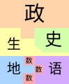
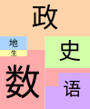
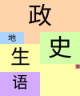

日志
2024年9月
上午跳闸6次（升旗时占四次。当时领导演讲时跳闸，几人赶紧搬音响，第四次跳闸时讲话那人自动“无缝衔接”，用起备用音响）
换语文老师。学生：“怎么突然变老了？”
郑炜玻璃杯不慎摔碎，郑炜玩玻璃渣时手流血。
林奕扬用夹子夹嘴、鼻子。
蒲林豪睡觉流口水。
王淮作文出现“福州首都北京”。
蒲林豪睡觉第二次流口水。
语文老师发明“防伪标志”。
语文老师将“陈睿卓”念成“陈睿zhuō”；把“薛阅晨”念成“xiāo阅晨”。
午休时林奕扬将外套套在书包（书包放桌上）外面，并用语文书将帽子撑起，做成假人。随后给大家展示自己摸（还把拉链拉开摸）那个假人的胸部以及生殖器官（还去吻、扯），体育老师发现后将外套扯下来。
教室门外贴着的考生名单中出现日本人名“中岛隆骏”被学生调侃“日本人考语文”。
语文老师播放课文朗读时背景音是早读铃声。
音乐老师课件中出现“脏乱差”图片时，学生：“蒲林豪家！”出现婚礼相关图片时，生：“林芷琪和郑致辰！”
林奕扬被生物老师称“2B青年欢乐多”。
蒲林豪钻进装班服的纸箱。
林芷琪抢林奕扬筷子被刘老师找。
蒲林豪把刚发下来的班服当裤子穿，本人：“新时尚。”
郑炜换座后被女生围住，本人表示“很高兴”。
眼保健操时有人离开教室被扣26分，被刘老师留下并罚写说明。
林芷琪表示：初三毕业请全班吃蛋糕。
数学老师讲评作业时，展台上的计算题过程错、答案对，师：“你这是错错得对啊。”
数学考试：
- 蒲林豪玩勺子，师：“还，还照镜子啊？过来。”然后将蒲林豪双手各打一下并没收勺子。
- 薛阅晨“喵喵喵”（唱《see you again》）。
新梗：“金叵罗”。
蒲林豪饭粒掉到凳子、桌布上。
自习时外面操场有人打鼓，王淮：“谁在敲桌子？”
薛阅晨：“喝蜜蜂……”
蒲林豪玩垃圾袋。
唐家祺因多嘴被刘老师打10下。
班级热搜榜中出现：“依诺：宝宝（林芷琪）好快！”后被杨依诺擦掉。
就是啊，好厉害！
……更多 #爆# 孔祥懿800m全年级第1！！！
#爆# 陈睿卓跳高年级第4！！！
#爆# 班主任Miss.Liu竟亲自陪跑！！ 啊！！！我爱您老师！！！（作者赞过）
同上！！！
老师超敬业的好吧！又是爱老师的一天（作者赞过）
老师评论：爱你们（作者赞过） #爆# 震惊！林芷琪800m全组第三！！！ 杨依诺：好快！！！（作者赞过）
芷琪：有吗？嘻嘻！！！
钰颖：（回复芷琪）好厉害呀！ #爆# 全班同学近期精神状态如下图
诗语：我的妈呀！！！绝美！！（作者赞过）
作者亲启：哈哈哈！！！
快放学时蒲林豪因拿起书包被刘老师罚站。
午托将近时刘老师让大家不要到处“要饭”，大家都说：“虽然没有提到‘林奕扬’三字，但句句都在说林奕扬。”
闭幕式领导宣读国庆注意事项，同学们不耐烦时突然下大雨。
趣味运动会时学生表示想看地理老师玩。
#爆 林芷琪100米小组第一！！！
#爆 孔祥懿喜获金、铜双奖！！！ 钰颖：真厉害！！！
沁诗：好牛！！！
诗语：天哪！！！（作者赞过）
允儿：好棒啊（作者赞过）
桂芳：好！！作者亲启：啊哈哈哈 #爆 今日班级精神状态be like：
#爆 季仁槿要吃免费冰淇淋！！！（不要7.5，只要一个季仁槿）
#爆 季仁槿要谋权篡位当英语老师！！
季仁槿：我当网红了！
那~咋~了~（作者赞过）
雨晴：我来吃冰淇淋 #爆 杨依诺和林芷琪进决赛！
#爆 放假前夕，同学逐渐癫狂！！！！！
2024年10月
刘老师在隔壁班讲话，声音通过麦克风被同学们听见。
语文课上有人电子设备响铃，大课间班主任占用20分钟查明真相。
林奕扬吃腰带（并表演杂技）、矿泉水瓶封圈。
地理老师将“学委”说成“zhé委”。
郑诗语先后和蒲林豪（要单打独斗）和郑致辰（被其他人坑）上台答政治题。
语文课代表把“从百草园到三味书屋”称为“三只松鼠”。
蒲林豪将腿蜷缩到衣服里面，被调侃“巨乳”“怀孕”。
语文课上林奕扬用餐巾纸做“榴莲千层”（即把餐巾纸叠起来并在纸张间留出空隙）。
数学课件中出现“绿化队今年植树约2棵”、“某区在校中学生约75人”。
美术老师被人称“跟地理老师一样是超雄……”。
美术课前三分钟，郑致辰：“美术课代表上来领读！”
美术老师语录：
- 有点变态。
- 看（女生）够了没？
- 你也得了这个后视症啊！
- 他的眼睛看上去充满了期待。
- （林奕扬画画难看）我看你不是做完了，你是人完了！
- 我还以为你右边（女生）看腻了，开始看后面。
- 要是你们家婴儿哭的话，把这张作业（狮子）拿出来，立马就不哭了，还能避邪啊！
- （林奕扬）不要创造新物种。
大课间被人告知要跑操，出去后发现只有初三要跑。
林奕扬把“华威菜多多”保温箱上的密封条撕下来（创造9班撕密封条先例），发现“么么脆鸡排”。
体育课上蒲林豪称自己很虚，要报跆拳道。
背《从百草园到三味书屋》时，学生：“……肥胖的黄丰（黄蜂）泽伏在蔡华（菜花）楷上……”
林奕扬把纸涂黑贴到牙齿上。
蒲林豪午休时第三次流口水并拉丝，学生将黑笔放到他的嘴下面、将红笔放在他耳朵上后惊醒蒲林豪。
下课后刘老师检查未预习的人的记作业本，发现未抄后每人打5下左右。随后让全班回教室统一检查记作业本并不允许第三节下课。
午休时林奕扬让人绑自己手，体育老师发现后没收带子。林奕扬就开始转圈，转完后倒地。后又从体育老师身后偷偷爬过去拿那条带子被打屁股、扣2分。
午托时学生争吵背历史还是地理，林奕扬到办公室询问刘老师“今天背什么”，刘老师回答今天作业要背的单词，林奕扬回班相告，学生开始背英语，背了半个中午，刘老师进班时才发现背错了。
蒲林豪坐讲台被称“葡萄老师”。
叶弘毅打篮球时指甲断掉。
蒲林豪饭粒粘在脸上被笑。
音乐课有人问“送葬的是什么花”。
体育课蒲林豪躺在跑道上，并将小学校服绑在腿上（辣眼睛）。
劳技老师课上教物理、历史知识，学生表示想学“水仙”。
体锻课时段长音响回音明显，非常滑稽，学生都在笑。
国旗下讲话主题为《食品安全》，学生：“国旗下讲话说是食品安全，但句句都在讲自己的午餐。”
林奕扬裤子破。
薛阅晨对体育老师说：“我去找下体育老师。”然后又说：“没找到体育老师。”
薛阅晨：“体育老师看美女！”
英语课谈到记忆“+es”的方法，唐家祺：“我知道一个记忆方法：‘傻叉吃屎’。”
刘老师：“唐家祺找不到女朋友。”
刘老师说自己（以前）跳绳so easy，自己可以跳1000下；跳远可以跳2米；三级跳运动会第一；跑步满分。还说同学们“太菜了”以及自己数理化英最好。
生物课，学生看人体八大系统视频时出现生殖系统（起哄、笑），看完后，师：“……男生猥琐地笑，女生不好意思地笑……我们下学期学生殖系统……”并开始说学生殖系统那些事。下课后，郑致辰：“黄恩亚的必修课？”薛阅晨：“七年级下册的生物！”
林奕扬午休时照（刘天馨的）镜子。
地理老师：“李仁槿。”学生：“季仁槿！”师：“李仁什么？”学生：“季仁槿。”师：“什么槿……”
地理老师对蒲林豪说：“福州有一个精神病院，专治精神科。”
古诗学到“不知何处吹芦管”时，学生：“黄恩亚专场！”黄恩亚红温。
政治老师问如何交朋友。林芷琪：“要说‘Nice to meet you.’”薛阅晨：“如果跟不务正业的精神小伙……”
华威菜多多公司派人询问午餐情况，学生让关闭录像后疯狂吐槽饭菜，更是说“想吃帝王蟹、鲍鱼、海鲜”等。
美术课，临近下课时陈睿卓、林承钰被罚蹲，原因疑似乱画，后画被撕掉。下课后，同学们在讲台上“拼图”，拼完后发现画中有蜜蜂、鲨鱼、驴、蜘蛛以及两匹马（马嘉祺、马驾）。
蒲林豪耍“杂技（腿架脖子上）”时一体育老师路过并顺手拍照。
林奕扬用英语小测大象叫。
蒲林豪：“骨折不痛。”
陈子岩称：自己10月要开演唱会，门票10亿元；自己要去西伯利亚挖土豆、去亚马逊雨林荒野求生。学生：“震惊！陈子岩进男厕所”；“陈子岩私生活紊乱”；“陈子岩粉丝全是黑粉”。
刘老师进行思想教育时蚊子在屏幕上飞来飞去并点开文件夹等窗口。
刘老师：“那就短的长袖……”“林奕扬形象不太好……”
最后一节课语文老师不来上课，刘老师让背历史（且必须在放学前背完），结果放学后几乎全班留下（要么背诵没过、要么小测没过、要么值日）。
蒲林豪第四次流口水，起身时口水拉（很长的）丝。
地理老师让蒲林豪回答问题，蒲林豪起立后，地理老师：“他是从梁山来的，一般梁山的人都不敢问……”
地理老师请女生回答问题，问：“刘天馨是女生还是林奕扬是女生？”
陈子岩的“演唱会门票”被历史老师发现。
数学老师理发引起关注。
门口图书角好书推荐出现叶弘毅的《数学家的眼光》。
刘老师：“……没有认真地讲话。”
评比组老师巡视布置情况时把写着“仁槿（人机）公主”的热搜榜拍照。
学校中午放《奢香夫人》引发关注。
地理老师将“蒲林豪”叫成“蒋林豪”、将“季仁槿”叫成“李仁槿”、将“徐嘉明”叫成“徐嘉石”。
地理老师看完林奕扬的作业后说：“……以后你妈妈要参加重大活动，让你化妆……把阎王吓傻了……”对郑炜：“你长得太‘帅’了！……”对蒲林豪：“你个傻逼……”
地理老师：“‘啊’你个毛线虫（球）！”
林奕扬上演“皇帝的新本”，交上去的周记没有一个字。
语文老师检查《朝花夕拾》原著，郑致辰把开学时发的“四十中日常行为规范”封面改成“朝花夕拾”。
刘老师：“这么热还开什么风扇？”
蒲林豪汤泡饭并把擦过鼻涕的纸塞进汤里。
别班喝的海带汤里的海带中出现虫卵，汤杯放在水池边引发大量学生关注，相当一部分人说以后再也不喝海带汤。
午休时刘老师在外面弄小测，蒲林豪、林梓颢、郑致辰、林奕扬“喵喵喵”，被刘老师叫去办公室罚站、打手。林芷琪在午休时跳舞却逃过一劫。
王淮：“蔡华楷，你欠黄丰揍了是吧！”
美术老师语录：
- 这么骚包！
- （对叶弘毅）看一个男生那么激动，你也是男的，公的！
- （对林奕扬）这是人类的作业吗？
- 你还好这口啊！
美术老师：“操作（zuō）”“尺（chī）子”“装饰（shī）”“青苔（tāi）”
讲评校本作业时，数学老师投影薛阅晨的，里面的题有的变了符号，有的没变，数学老师就说“心情好就变，心情不好就不变”“这是边看电视边写的啊”“跳步跳跳变成跳楼”。
刘老师：“这么热还开什么风扇？”
唐家祺背书时将“乌拉尔山脉”说成“巴拿尔山脉”“乌拿尔山脉”，将其“土耳其”说成“土耳木其”。
抽背地理，蒲林豪拿历史书。
薛阅晨对体育老师手机说：“小艺小艺！”
午休时陆梓豪将牛奶挤到后面桌上（受害人：郑熠菲、郭沁诗、林芷琪）。
蚊子又在屏幕上点击（点开展台、IE）。
黄恩亚对刘老师说自己肾不好。
谈论抽奖/抽罚内容时，唐家祺：“我要吃小零食的相反数！”刘老师：“就是唐家祺买零食。”
刘老师：“我还是运动细胞非常发达的。”
数学老师打开课件时播放音乐。
语文老师被车撞，手臂需手术。其他老师代课。
上课时地理老师接到一个广告电话。
地理老师将红色（巨）点叫做“红色的一坨”“黄色的一坨”。
林奕扬讲话时流口水。
叶弘毅在教室门上玩单杠。
因台风原因，来学校时没电。倪浩宇称刘老师打电话叫电工修电，不一会儿电力恢复。
刮台风时崔宇臣从窗台抓到神秘生物（蜻蜓）。
学生争论蔡华楷课上是否讲话。
美术老师语录：
- 男生怎么有中国大妈的特色？
- 什么功夫这么高深啊！
- 我还以为你喝多了！
- 我以为你死了！
林奕扬画乱涂乱画，称：“这个是梵高的画……”
2024年11月
蒲林豪早读时发现数学书忘带，数学老师进来后发现书本在展台上。
地理老师问谁有用尺子量，林奕扬举手，地理老师便拿起戒尺：“你喜不喜欢他？……但它想和你亲密接触一下……”
蒲林豪上课时鸟叫被打3下。叶弘毅问：“你上次打他时不是说下次打8下吗？”地理老师：“对智商比较平凡的人，骗骗就好了……上课到现在为止，他鸟叫了3回了，希望九班不要养小鸟……”
政治（郭）老师说有声音就拍照发给班主任，林奕扬：“老师记得开美颜哦~”
放学后学生异常兴奋，有的还唱起《常回家看看》。
午托时得知李梦妍参加体锻课接力赛，学生表示“她跑得很‘快’”“输定了”。体锻课时四个班为一组接力，9班果然倒数第一。
体育课上，薛阅晨：“（跑1km）慢28分钟……”
体锻课时一飞机飞过，蒲林豪：“他肯定是来接应我的，我这么帅……”
据悉，周末林奕扬理发理坏了，他的父母便将他剃成快要光头的程度。
学生班级群败露，据悉有人在群中造谣，更有传言称有内奸混杂其中。
语文老师“开火车”复习：提问到黄恩亚时，老师让翻译“元方入门不顾”的“顾”，黄恩亚手指前方：“回头看！”成为经典。
语文老师形容薛阅晨“帅气”，形容陆梓豪“高大威武”，形容郑锦熠“声音很有磁性”，形容蒲林豪“很不一般”，形容陈子岩“笑得很灿烂”，形容黄恩亚“很可爱”。
林奕扬、蔡华楷数学课上玩（太阳）反光，林奕扬还把光斑投到数学老师身上。
蔡华楷被叫回答问题，坐下时没坐到凳子上，于是“砰”的一声摔倒，数学老师追问是谁干的，蔡华楷表示自己刚刚站起来时把凳子向后推了一下。
数学老师在拍郭沁诗试卷的前两页，同时郑致辰（值日班长）在记作业未完成的学生的名单，数学老师问：“在写什么？”郑致辰：“在记名单。”数学老师：“作业拿过来。”郑致辰以为老师检查，就递了过去，结果数学老师投影了他作业的3、4页。
班会课上刘老师谈“班级群事件”。
刘老师：“为7班争光。”
量化蒲林豪倒数，上来抽罚时口水不小心流到讲台上。
林奕扬把800字量化倒数检讨写成800字月考检讨（白写了）。
体育课时杨依诺不跑步，学生问，杨依诺说自己向体育老师请假并称自己“肾痛”。
班会课前发借书卡，下课时蔡华楷就去“尝鲜”随便借了一本，翻了2页后就说：“不好看，放学就去还。”
林芷琪领读单词时读到“铅笔”，学生模仿美术老师的读“铅bī”被刘老师骂，后刘老师让大家拿科作业纸写上刚才读“铅bī”的人并将他们叫到办公室。
地理老师对薛阅晨：“帅哥！……”对林奕扬：“（头发）还要剃得光一点……”
地理老师将“王淮”读成“王浩”。
林奕扬到讲台交小测时把刘老师杯中的牛奶打翻，江雨晴的英语本受害。
前一天刘老师说“跑操路过我面前时要喊‘三单要加s’”，当天跑操时蒲林豪喊“三单不要加s！”。
抄作业时林奕扬说“So easy!”刘老师：“林奕扬这次期中考英语必须135分以上。”
蒲林豪上课被罚站，结果站着睡着，刘老师：“站着都能睡着，是不是晚上做贼了？”
林奕扬坐凳子时把笔盖压碎，美术老师：“这个屁股是怎么构造的？把屁股当钳子用啊！”
刘老师看学生打羽毛球，转身后蔡华楷、陈子岩发现后作死去寻找她。
学生到电脑室选活动课。选完后，蒲林豪回到教室时怪叫被王淮扣2分。
跑操时林奕扬鞋子掉，他不得不单脚跳一会儿。
薛阅晨带秒表计时刘老师上课时间。
林奕扬上课时：“能不能开空调，裤子都弄湿了。”
政治课前发预防艾滋病的手册被学生笑，结果中午被刘老师“教育”，其中，陈睿卓、林承钰因在书上画画被罚每次做手抄报他们两个都必须交一份。
语文老师看蒲林豪试卷答案并念出来，学生：“跟作业帮上的一模一样！”课件上的答案出来时，学生又发现和蒲林豪的一样。
语文老师：“‘甫’是美男子的意思。”学生：“蒲林豪……”
地理课前三分钟，薛阅晨：“拿出历史书！……”
地理老师：“Sit down, please.”
林梓颢在菜里吃出塑料薄片。
蔡华楷没带走英语笔记本，周一时刘老师在讲台发现并问是谁的。蔡华楷：“看一下侧面（名字）。”然后将其拿走。
李梦妍剪“中分”被多人嘲笑。
数学考试时初二（14）班考场一初二学生（林奕扬同桌）突然发疯，一边大吼一边摇桌子。考完试后林奕扬直接被整出心理阴影（哭了）。
数学老师无聊去看抽奖箱和抽罚箱。
数学老师在班上电脑上登陆网站改数学答题卡。
林奕扬、刘天馨复习时玩“斗书主”，即用七科的教材打“斗地主”。
刘老师见林奕扬发呆，便问自己刚才讲了什么，林奕扬：“逗号前面要加逗号。”
男厕所地板上出现一条内裤，里面包裹着屎。
生物期中考，14班监考老师：“写上姓名和名字。”
薛阅晨将抄词语说成抄单词。
到教室外排练“班班有朗诵”：
- 王淮笑场。
- 别班（对面）透过窗户看，随后多个班级因外面太吵关上窗户。
- 不久11班也来练，结果声音被拉爆。
洪鑫洋期中语文、数学考试时与初二学生交谈被班级处分。
刘老师：“……说明水泽的小测……”
李梦妍喷壶没带回家，结果当天值日生在黑板上写：“李梦妍防狼喷雾没拿”。
廖成羲语文课上拆椅子。
刘老师：“季仁槿一点绅士风度都没有。”
军训文艺汇演9班要唱《少年中国说》。
历史课学生吵闹被人告状，中午、晚上刘老师大讲此事，还特地去查监控。杨依诺在午休后找刘老师“理论”，语气不好被大骂。
语文课时刘老师神不知鬼不觉地在窗外出现，吓到多人。
地理老师让估分，随后选地理大组长。林芷琪故意将自己估成不及格，地理老师就说：“如果成绩出来后及格了，我们两个人就一起‘打’你。”临近下课时还叫了一遍“林芷琪”以加深记忆。
最后一节语文课看了半小时纪录片《何以中国》。
数学老师投影郑致辰作业，结果一大片错误，数学老师：“这是故意给老师设陷阱是吧！”有学生说：“学委……”师：“还学委呀！”
蒲林豪打瞌睡，数学老师：“天天打瞌睡，你是不是吸毒了哈，跟那个隐君子似的。……离得太近了，还有那个讲台作掩护啊！”
小测让默课文，很多人不会，被罚抄10遍，午休时一堆人在抄。
刘老师：“我们就说我们是‘凌云9班，凌云乐队’。”唐家祺：“韭（九）菜乐队！”
体育课上蒲林豪用黄色垃圾袋把脚套起来跑步，还在跑道上模拟“穿短裙”并用垃圾袋当帽子。
集合时崔宇臣仍在上厕所，于是辅导员全校通报：“初一（9）班的崔宇臣！”
黄恩亚、蒲林豪同宿舍，该宿舍的人表示黄恩亚必须洗澡。
消防演练时，学生吐槽龙翔道：“有120个项目！”“我都不知道龙翔怎么赚钱！”“玩得太开心了！”“饭菜健康又美味。”“两天就把120个项目都玩完了！”……
崔宇臣体验VR时以为自己真的在坐过山车，于是两次抠并吃鼻屎。
辅导员说“初中部/四十中/九班”时，别人答“到！”陈睿卓、唐家祺、郑锦熠等人大声答“操！”。
辅导员给大家“惊喜”，也就是宿舍不合格的照片。
朗诵时别班“严重抄袭”9班。
福清一中一学生和陈睿卓搭讪。
郑锦熠稍息时故意踢别人水杯。
辅导员对郑锦熠、陈睿卓说：“就你们两个10班的还在吵！”
有人看到辅导员手机壁纸是美女。
辅导员被其他辅导员“轮奸”。
拉练时学生路过玉埔村，学生：“蒲林豪家！”结果蒲林豪真的走进去；唐家祺、林奕扬等人摘花并放耳朵上；电线杆上有“简普赛山庄”广告，学生：“到柬埔寨了！”“出国了！”；走路时遇见一小孩，学生挥手并大喊：“早——上——好——”“How do you do?”
辅导员：“第二个科目：稍息立正、跨立……啊呸！”
其他方阵声音不响亮，辅导员就喊：“声音声音！”
辅导员：“向前对正！……我让你对正了吗？”
学生听见其他辅导员喊：“线粒体！”
辅导员为让学生跺脚声音响亮，就说：“我教你一个办法：永远记住，你的左脚下是你本班的辅导员，踩死他……”
有人发现操场会掉色。
洪鑫洋的结营证书中名字被写成“洪鑫详”。
劳技课，陆梓豪：“把精子包进饺子里。”
郑永泽将自己名字写成“Zheny Yongze”。
刘老师让大家每节课前喊三遍“我爱……（科目）！”。
跑操喊现在进行时的四种结构，结束后她还让每一个人说一句，过关才能回班。
班会课前突然换座引发热议，林芷琪“中奖”跟黄恩亚坐。
生物老师说上完今天的课大家会吃不下午饭，结果讲到“猪肉绦虫”学生直呼恶心。当天午饭就有人说不要吃肉（有猪肉绦虫）。
生物课玩游戏，“amazing，amazing！”限时回归。
生物课时讲台的第三块黑板中间有人贴了一张午餐的密封条。
黄恩亚咳嗽时：“我操！”。
林奕扬数学课上写东西，数学老师：“在给英语老师写信是吧！”
学生：“damn纸钱！”
陆梓豪：“视死如生。”
刘老师让作业被折的人上台打手，唐家祺被打得整个人蜷缩起来。
其他年段一学生在9班图书角翻书被刘老师抓到，多人围观。
午休后黄恩亚将中午吃剩的自带饭拿出来吃。
地理老师对陈睿卓40.5分的成绩评价道：“把这个成绩贴在额头上，能去游神了……”对曾好：“曾好还是假好啊！”
蒲林豪、林奕扬被刘老师称“笑得很猥琐”，蒲林豪跑操时还一直怪叫。
林奕扬表演滑跪技巧。
午休时郑永泽被刘老师表扬“睡觉很认真”，还加了一分量化分。
陆梓豪：“脑筋就是脑的精液。”
美术老师语录：
- （多人上厕所）你们班集体肾亏啊！
- 这个（狮子）显然是做过手术啊！
- 你今天没有吃药吧！还是吃错药了？
- 我等下对你进行听力测试啊！
- 拉一泡尿也这么高兴？
语文老师：“今天上《诫子书》。”黄恩亚：“戒色书。”
语文老师将“陈睿卓”念成“陈卓睿”。
2024年12月
倪浩宇回答问题：“……with Wang Wei.”
11班班主任试上班会，让发明“情绪控制神器”。唐家祺发明“笔格啵拉拉（big banana）”。
林奕扬午休时在地上“爬行”、跳舞。
跑操时上演“恩亚危机”，叶弘毅被黄恩亚碰到。
薛阅晨：“误食大便。”
生物老师分享自己小时候上生物课经历：到生物实验室时，讲台上摆着一盆蛔虫（死的），要求每人都要解剖蛔虫。当天中午去到食堂发现有炒面条，结果大家一周不敢吃炒面条。
分享学习经验时，蔡华楷讲了两句，说：“编不下去了。”郑致辰多次提及“语文方略”，还说：“我们可以参考《方略》的第86到105页……”叶弘毅甚至用上黑板。
地理老师：“阅晨宝宝，我爱你呦~”
黄恩亚数学作业乱做，被罚起立时拍桌子。
郑致辰和崔宇臣数学课牵手。
午托时有人感冒咳嗽，结果多人效仿，咳嗽声此起彼伏，结果被刘老师发现。
美术老师语录：
- （崔宇臣擦鼻涕）回家去把插座插到屁股上……赶紧给自己通通电！……失控了你！……什么意思？你这个电流扩大了？
- （林奕扬要上厕所）（吃饭前）先把气放出来再吃？……那你刚才（做骚包动作）就是想拉？……那你现在上什么厕所？就地解决！
早上唐家祺（主犯）、林奕扬（从犯）在门口吓人。
林承钰喝奶茶引起关注。
早读刘老师讲事情后小蜜蜂未拿走，结果学生听到刘老师在隔壁班讲“Close your books and test.”。
刘老师：“跟人机一样。”
劳技课展示包饺子PPT。
- 倪浩宇：“饺子是中国的传统美德。”他讲PPT时还三次“自动播放”。
- 王淮的PPT中出现“单击此处添加标题”。另外，他还把字打成“饺子起源于角子”。他的PPT中还有“漏汤”一词，引发关注。
- 郑致辰讲PPT：“满汤都是肉馅”“待会儿一大坨的”“包那些阿猫阿狗”。同时PPT最后一页出现“汇报人：thank”
- 季仁槿、郑诗语在第一页用英语讲PPT，该PPT中还出现一堆动漫人物。
- 薛阅晨：“我们小组的成员记得带饺子”“因为他（郑永泽）喜欢吃醋”。
- 薛阅晨将“蒲林豪”打成“薄林豪”。
- 洪鑫洋：“杨依n蔓美丽的饺子啦！”
体锻课“跑操”，刘老师陪跑；学生玩龙翔的梗，如：“第一个科目，稍息立正跨立立正”“站10分钟军姿”等。
刘老师和体育老师一起打羽毛球。（据刘老师说，当时她出了一身汗，打完后没换衣服导致当天发烧）
语文老师：“刘奕扬。”
数学老师对杨依诺说：“那个照镜子的，回答一下这道题。”杨依诺回答后，师：“在说俄罗斯话吗？”
薛阅晨、王淮漏拍照片，被地理老师叫做“漏漏”。
刘老师和学生谈“阅晨宝宝”。
黄恩亚：“我喜欢高级玩家。”“我在戒色。”“立了（立体）图形。”
数学老师发现郑欣甜睡觉，便说：“做到很甜的梦了没？”
语文老师讲到《狼》中“顾”这个字，生：“回头看！”师：“是不是有什么歌？”学生就开始唱《恩亚歌》。
郑致辰：“想吃喽？”
语文老师叫“郑永泽”，学生都喊“是水泽！”唐家祺：“他原本是叫水泽的，然后（字）打错了，我们就说他是永泽。”
语文周末作业巨多，被称“国庆作业”。布置完后，学生：“放国庆了！”
薛阅晨点“小猴子（班级优化大师的随机功能）”时说“有种不祥的预感”，结果直接抽到他。
美术老师语录：
- （对崔宇臣）是谁把你果子偷了？……还是活在森林里面爽
- 看到同类很兴奋哦！
- 你找到你的母猴了吗？
洪鑫洋带读：“诸子书（诫子书）……”
语文老师念小测满分名单，念到洪鑫洋时，学生：“哇——（忽然改口）咦——”
有人调侃每次抽“小猴子”时一定会抽到（站在讲台上抽背的）课代表。
语文老师：“郑锦玉……”
郭沁诗、陈子岩聊天，地理老师罚他们一左一右站到后面并说：“一直在碰撞……”
地理老师讲到“冬天用护肤品”时，林奕扬问“那你老婆呢？”结果被打4下。
语文课，第一组多人称卷子未发到，找了一会儿发现被黄恩亚塞进书包了，学生：“恩亚私藏卷子！”
上课时洪鑫洋桌子突然被坐塌，他的同桌由于上厕所逃过一劫。
黄恩亚没戴口罩、手套包了三个饺子（据说形状似三角形、馅多）并被三位“幸运儿”吃到。
蔡华楷把塑料包到饺子里。
崔宇臣那组用面粉和（动词）面团。
唐家祺头靠在桌子上，在抽屉里玩面团被发现，美术老师走到他跟前好一会儿他才反应过来，被罚站到后面。
郑致辰咳嗽声搞笑，被美术老师评价：“什么品种的人？”
陈睿卓小测A-引发热议。
黄恩亚迟到，进班时还戴一顶鸭舌帽。
师：“杂家。”唐家祺：“唐家。”
洪鑫洋：“而顷刻两狼（毙）……”
陈睿卓被叫句子：“丁家的井挖到了一个人。”
刘老师：“哲岩子铭（哲铭子岩）……”
数学老师评价蒲林豪：“白天梦游，晚上搬砖。”
语文老师念小测满分名单。念到钱尚恩时，学生解锁新音效：“啊？”
语文老师抽查《诫子书》、《狼》注释及翻译。抽到唐家祺时：师：“遂成枯落。枯落。”唐：“柴草！”师：“非学无以广才。广。”唐：“广泛！”抽到陈睿卓时，师：“遂成枯落。遂。”卓：“枯落。”
最后一节课布置考场。校长广播催放学，同学们一边欢呼一边收书包，结果被刘老师狠批。剩下20分钟时段长上门催放学，学生欢呼被制止。然后就听到10班爆发一阵欢呼声。
唐家祺：“enjoy old people……”
语文课上学生发现黄恩亚一直把手放在生殖器官上面，跑操时大家就议论此事，甚至有人说“别人射出来的是蝌蚪，黄恩亚射出来的是青蛙”“射穿地球”。跑操结束后有人让黄恩亚当场撸，黄恩亚：“现在不是时候。”
数学午托时洪鑫洋桌子又倒。
洪鑫洋讲脏话被罚刷牙，开创9班刷牙先例。
王淮英语月考卷中学校写“仓实小”。
薛阅晨汤里喝出塑料。
蔡华楷画“女苔藓”SSR卡被刘老师发现并谈话。
最后一节课14个男生被叫去跑步，近一半学生被叫“直接回班！”。
学生：“王维（王淮）！”师：“王维在哪里？”
阅读课上有人把借书卡从3楼栏杆（栏杆后面有窗户）扔下。
有人中午（英语小测）重测时在屏幕上写“黄恩亚”。
师：“垂线的交点叫什么？”洪鑫洋：“垂点（垂足）！”
黄恩亚午休后在背书的单子前跳舞。
黄恩亚：“我身上有致癌物！”
地理老师说“白种人几乎100%有体味……黄种人只有10%左右。”学生：“黄恩亚！”
有人写“方欣妍don't take卷子”被称“语法错误”。
学习小组“加餐”。
刘老师突发奇想改班上电脑壁纸，选出几张后，学生：“要第一张！（嘘！别打扰我学习）”
有人打印王淮“简历”。
陈睿卓唱《海阔天空》时配上动作，被称“歌王”。
季仁槿：“2025年11月（人口达80亿）……”洪鑫洋：“太阳洲（大洋洲）人口最少……”
黄恩亚：“祝老师天天嫖娼。”
陈睿卓月考段排250名。
师：“瞬时记忆。”郑致辰：“逆时记忆。”
洪鑫洋带读：“谢太傅集雪日内集……宋国有个人担忧天会崩塌……”
文艺汇演老师上舞台跳舞（包括段长、地理老师），学生先是集体起立，后来甚至站在位子上看。
2025年1月
上体育课时有人发现一只老鼠爬出来。
语文老师：“社交。”郑致辰：“射和交。”
黄恩亚上课习惯性把脚伸到过道上把刘老师绊倒。
语文课写作文，下课后崔宇臣只字未写。
《皇帝的新装》课件中出现上半身裸体皇帝，但下半身被遮住。唐家祺：“为什么他还有穿衣服？”师：“家祺，你想看什么……”
周末学生喜提8张卷子（英语1，语文2，生物2，历史1，数学2）。
黄恩亚放响屁。林芷琪：“黄恩亚放屁好响啊！”别人：“水仙说‘黄恩亚放屁好香啊’！”
陆梓豪：“澳门独立制度……”
数学老师讲课第二次不小心把自己手机的小艺唤起，师：“手机都听懂了是吧？”随后手机问：“是不是想让我帮助化简？”师：“手机是非常认真的。”
历史试卷第四页选择题没选项，林奕扬选A。
郑致辰：“饿得二弟都站不起来了……”
数学老师：“每次都要拿致辰的……字又好看，写得又不错……”
跑操时林奕扬羽绒服爆掉。
跑操结束后有高年级打篮球，被刘老师批斗（拍照发给他们班的班主任）。
午休时李欢颜因背书舌战李映辰。
蔡华楷抱来七下生物书，遭大批学生抢并翻看（人的生殖），并有人说“在58页！”黄恩亚：“我最爱的书来了。”
崔宇臣被叫回答问题，许久答不上来。语文老师突然说：“（唐家祺）秋裤？”
语文老师让林承钰回答问题。此时恰好洪鑫洋在睡觉被郑永泽提醒，洪鑫洋以为老师叫他，于是起立回答问题。
升旗后老师通报有人把男厕所下水道堵住，导致初中楼男厕所用不了，要10000元疏通管道费。
学生拿饭时：“不要乱插……会生殖隔离！”
黄恩亚：“我周末在家里嫖娼。”
陆梓豪进班时“Lady go,lady go……”被王淮注视。
午休时黄恩亚说自己用加速器看91，还谈到“梯子”、“翻墙”、“外网”、“隐藏IP”等。
黄恩亚：“我玩电脑玩了几十年。”
蔡华楷：“值日生的都出去！不是值日生的都进来！”
地理课考试，地理老师就去教室外面和别的学生打羽毛球。
洪鑫洋把七下生物书扔给黄恩亚。
郑炜作文一炮而红（十年后的我、我的动物朋友）。
唐家祺：“梦妍比较狡猾，梦琪比较老实。”
洪鑫洋：“东临碣石，以观沧海。树木丛生……”
语文老师对郑致辰说：“不要对别人眉来眼去的。”郑致辰：“是他先对我抛媚的！”
唐家祺写“k”笔画错误被“批斗”。
李映辰被罚站后面。语文老师让她上台写字时同学们发现她用口水在后黑板画画。
黄恩亚下台时夸张地小跑一阵，然后做出“开！”的动作。
郑致辰：“我今晚要跟踪（语文）老师。”
唐家祺唱“宫商角徵羽~”
语文老师送33、50、32号学生书签。
午休时林奕扬把崔宇臣的水杯放在地上摩擦，发出怪声。
期末考时“神经病”和王淮坐。
黄恩亚：“我喜欢我的生殖器官。”
英语听力卡到爆；“Duxing Building”和“Zhiyuan Building”成为经典。
黄恩亚：“我的字写的什么玩意，改卷老师都要看崩了。”
生物老师给大家上七下“人的生殖”。看视频时黄恩亚坐得非常端正，专注认真地观看。唐家祺大声朗读：“睾丸是男性的主要生殖器官，它的功能是产生精子，分泌雄激素……”黄恩亚：“老师能不能把（人的生殖）课件发群里？”
黄恩亚秀自己鼓起来的裤子。
猜成语时，蒲林豪：“龟头……”
布置语文寒假作业时文档中多个字打错，如：万格纸（方格纸）、观代文（现代文）。
四十中回执把“寒假”打成“赛假”。
大扫除时电灯“爆炸”，随后停电，刘老师：“要低调。”（擦完电灯后，一人去开灯，结果听到“砰”的一声巨响，教室里的人看到一阵转瞬即逝的闪光，吓了大家一跳，然后灯也打不开了。）
（未记录确定日期）
地理老师抽李梦妍回答盆地特征，李梦妍不会，地理老师就说：“自己家的脸盆长什么样都不知道？”
地理老师说自己曾经跟其他班讲撒哈拉沙漠女人洗澡的事。
地理老师对林奕扬：“……估计可以成为一个好老公。”
蒲林豪圆规修门。
地理老师：“那些在‘啊’的男生估计也是提早发育了。”
语文老师：“（郑致辰）用他锐利的眼神扫视全班……”“我没马，我骑小电驴。”
语文老师讲解定语、状语、补语，举例子：“我打你”→“漂亮的我生气地打丑陋的你。”
刘老师让王淮每天中午播放音标视频，学生称其为“下饭小视频”，并有“红温姐”、“变性”等梗。
唐家祺声称要“扣碎篮板”。
一日黄恩亚说：“我叫恩正！”
一天数学老师上课时把手机小艺唤醒，还听到了小艺的回答。
数学老师对蒲林豪：“大麻抽多了。”
朱奕辰的作业出现“M为中原（中点）”。
刘老师：“永淮的作文……”
杨依诺在（地理）活动课上硬要送地理老师一个千纸鹤。
政治课观看小水滴视频，背景音乐出现《孤勇者》。
2025年2月
黄恩亚：“我在戒色”“性教育视频”
郑欣甜历史0分。
刘老师：“给黄恩亚一个任务。”唐家祺：“每天洗澡！”
数学老师：“语文英语（期末段排）都第一，文科班是吧！”
刘老师早读前进班，离开时被门撞到。
开学典礼上，校长演讲时引用《哪吒2》台词：“……我命由我不由天。若前方无路，我便踏出一条路；若天地不容，我便扭转这乾坤……”
学生：“黄恩亚会打篮球！”黄恩亚：“我可以射出来，给那个球加速。”
唐家祺：“天网学（天学网）。”“资助50元给人刮彩票。”
语文课讲到早上起床，唐家祺：“管家一早起来（准备帝王蟹）……”
黄恩亚：“操！操！操！”
英语PPT上放食盐图片，唐家祺脱口而出：“Milk!”
薛阅晨：“黄丰泽可能中暑了。”刘老师：“吓死我了，我听成‘中毒’了。”
填空：“She wears a warm ……”唐家祺：“Supermarket！因为郑炜作文就这么写的（一进门就感到一股温暖）……”
黄恩亚小测积累本单词写对被表扬。
刘老师：“10月上过去式。”
英语小测中出现：“她每天花费100元在（写）作业上。”
刘老师在唐家祺英语本上写“包皮”（包书皮）。
体育老师：“原地休息3分钟。”郑致辰：“原地撸30秒。”准备跑步时：“边跑边射。”
黄恩亚：“精液思（静夜思）。”“同学之间用不雅语言交谈。”“（得知小测B-）我立了啊！”
历史课，师：“王维来说一下。”“心诗（沁诗）同学……”“还有一个（郑欣甜）在睡觉就不念了哈。”
信息课，蒲林豪：“电脑玩不了玩睾丸。”
信息老师：“91王维做好了。”
薛阅晨午休吃水果，刘老师：“……扣分。”郑致辰：“老师他在梦游！”
方欣妍：“洪鑫洋你眼睛抽筋了？”
唐家祺进班：“为什么还会有阴茎和乳头啊！”
地理期末考就黄桂芳、林梓颢（同桌）不合格（未及格且未进步3分），被称“金童玉女”，需每节课抄知识点。
数学老师展示黄恩亚作业。
（数学）课前三分钟，唐家祺：“Penis!”
刘老师给“如来佛组”成员点（外卖）奶茶，备注：“不要香菜和芹菜，谢谢老板~~~”
师：“在打游戏。”黄恩亚：“在看片。”师：“翘的部分。”黄恩亚：“立的部分。”
美术老师语录：
- （讲述别班某学生没交美术纸）你交了，应该是烧焦了。
- （郑锦熠趴着）你在练法轮功吗？……会出人命的！
- （蒲林豪）你有些不适应人类的生活……还是森林里面好……那里有潺潺的溪水、茂密的森林……
- 你们两个都是公的！……好歹对美女感点兴趣……
- 不是长期的智障，是临时智障……
历史老师把“华楷”念成“花开”，还说：“刚才你上课的样子就像一朵花开。”
语文开门考9班段一，语文老师说只给前十加1分，唐家祺：“会引起地方势力，9班会灭亡的！”加分时，语文老师问薛阅晨座号，唐家祺：“46（自己的座号）！”
语文课，师：“廖成羲你在干嘛？”生：“他说借张纸。”全班安静一会儿，突然哄堂大笑（想歪了）。随后，唐家祺举手：“去厕所（全班笑）。”别人：“要不要纸？”
语文课，师：“访谈对象。”唐家祺：“水泽永远是我的对象！”
唐家祺：“撸（儒）学经典。”“He is teacher.（‘teacher’谐音‘老实’）”“校服都一个学期（没发）了，我家都没衣服穿了！”
第一节语文课，教室外广播：“喂？”生：“清校时间已到！”
语文老师：“小红苏（小红书）。”
黄恩亚：“听到精子就来劲。”“地球已经痿掉了。”
唐家祺：“走进四十中，你是囚犯；走出四十中，你是劳改犯。”
方欣妍聊天时饭撒掉。
黄恩亚的笔漏墨，黄恩亚：“漏精。”
刘老师：“这么难吃的（学校的）饭。”
地理老师要打蒲林豪时：“这个手这么黑，我都不想打。……这个小黑子……”快下课时林奕扬要上厕所，师：“憋着！我要听到等下爆炸的声音！”
数学课件中出现“小明100m跑9.9秒”。
语文课写作文《对 的一次访问》，语文老师看到崔宇臣的提纲，写着：“革命前辈你好”“你在战场上杀了那么多敌人”
语文课写作文，语文老师谈到自己当志愿者的经历：“有人吐口水……”郑致辰：“让他蹲地上舔掉。”……师：“我就做了一天（志愿者）。”蔡华楷：“为什么第一天就有人吐口水？”念范文时，师：“林大哥。”唐家祺：“郑大姐。”
黄恩亚：“一秒射出999米。”
美术课画农村的房子。美术老师看到林奕扬的画时，林奕扬解释：“这个是排气的，这个是通风的，这个是落地窗……”
郑致辰生日，林芷琪晚上12点整给郑致辰发消息。
黄恩亚：“受精过程是我最爱背的。”
历史老师下课离开时微信未退出登录，结果中午电脑接到“何剑老婆”的视频通话。
音乐老师说季仁槿“笑得很猥琐”。
午托，崔宇臣给黄恩亚看生物书中玉米花的图片，黄恩亚：“怎么又长又硬……这个比起我来都有点软的。”随后陆梓豪将桌布卷起：“这个是你吧！”黄恩亚：“上面加个圆的更像了。”
体锻课跑操17圈，结束后段长称周四活动课在数学思维班有人做出不尊重老师行为（睡觉、骂脏话），让那人周一放学前主动承认。
下午第三节是郑老师最后一节语文课，生：“要煽情！”“为什么最后一节了还上课！”
2025年3月
林芷琪：“刘天馨，有没有镜子？”陆梓豪（笑）：“有没有精子……”
生物课，唐家祺：“（天气热）明天直接裸奔。”陆梓豪：“把59页撕下来贴到脸上！”
刘老师叫人做事，唐家祺举手。师：“叫一个女生。”唐家祺：“老师我就是女的！”
生物课，讲到“导管”时有人笑，师：“我知道你们在想什么，笑的都是男生。”
黄恩亚：“怎么戒撸啊！”
英语课，讲到“ice”时，薛阅晨：“‘ice cream’的‘cream’什么意思？”生：“淇淋！”“School cream（校园欺凌）！”
抽背时，蒲林豪：“寒冷气候（寒带气候）。”随后薛阅晨问：“热带沙漠气候（特征）？”蒲林豪：“严寒干燥。”
上课时孔祥懿黑笔坏掉，黄丰泽、陈睿卓安慰她。后来二人被罚写反思（上课不要做不该做的事）。体育课时黄丰泽在跑道上“操”刘老师被叫家长。
早读李映辰被罚站，结果她脚踩在椅子上蹲着。
黄恩亚：“又要跑操，他妈我立了啊！”
唐家祺跑操时：“我左肾开始有点痛了，有点虚了，早知道昨天就不撸了。”郑致辰：“我也是。”
黑板上写：“李响辰小测没带”、“叶泓毅排球没拿”。
体育课，黄恩亚和陈子岩聊天。黄恩亚：“崔宇臣实在太萌了，心都快给他萌化了。”陈子岩问为什么黄恩亚现在不臭了，黄恩亚：“（把旧衣服拿去卖）……卖了十亿多，我家是卖劳斯莱斯的。”陈子岩问黄恩亚喜不喜欢崔宇臣、喜不喜欢讲黄话，黄恩亚：“半假半真。”陈子岩问黄恩亚认为的自己的人生转折点，黄恩亚：“我从期中考后就尝到生物的滋味。”陈子岩问黄恩亚为什么爱玩抽象，黄恩亚：“为了刷在班里的存在感。”
地理老师对林奕扬：“这个小毛猴，每节课都要爆胎……”
生物老师：“陈睿jué……”
语文课，师：“有‘使’去‘使’。”薛阅晨：“没屎现拉。”
蒲林豪：“人心中的成见是一个dick。”“别掏了别掏了。”
黄恩亚：“包皮瘙痒。”
语文老师：“俞辰昕（俞昕辰）。”
活动课时学生在5号楼楼上发现郑炜排球，上面写着“6年6班”。
崔宇臣放学后在教室分享饼干，一人给刘老师“分享”（当时刘老师还在讲台上）被刘老师发现。
地理课时突然停电，来电时薛阅晨一个人上讲台拍照，刚拍完一张书就掉到地上。这时陆梓豪发出莫名其妙的声音，地理老师用手中的笔敲他的头：“小老鼠~从哪里来~”
地理课，师：“生一个孩子补贴几十万。”唐家祺：“几十万？我生20个！”师：“你生的是人类吗？”
抽背时，陆梓豪跑进教室：“（刘老师）来了！”结果不一会儿，李映辰走了进来。
政治老师：“我知道，那个学委叫郑致豪。”
林承钰翻译“get water from the underground”：“坐地铁取水……”
蒲林豪：“恩亚穿得好性感。”
李映辰被罚站教室后面。结果语文课时，她直接做到后面的桌子上，一会儿更是上半身趴在桌上。
薛阅晨上课时将蒲林豪凳子推倒。
数学课上徐嘉明在太阳光下用放大镜试图点火（没成功），班上出现烧焦味。下课后学生评价徐嘉明：“物理学家。”“初二的物理课代表就让他当了。”
劳技课，林奕扬上台讲“葱油黄花鱼”做法并投影自己手写的介绍，纸上出现“人口即化”。讲完后，郑锦熠提问：“（放了酱油）这个吃了会变黑吗？”
薛阅晨希沃账号名字是“学委好帅”。
李映辰上课时“躺”在椅子上。
电脑课，老师让大家试着做二维码并打开网络，结果大家上网搜索各种东西（如91），还发现学长在360浏览器上的搜索记录：“女子把男子鸡割了”。
地理老师：“你们是小鬼头子。”
地理老师对林奕扬：“黑人牙膏代言人。”
地理老师：“福州也有很多小河。”林奕扬：“麦德龙臭水沟。”
体育课黄恩亚（热身）领跑半圈（后面跑不动了）。
政治课谈到班上有自尊的人，唐家祺：“王淮穿着足力健照样跑……”
洪鑫洋带读，把“乐府诗集”读成“乐岳诗府”。
郑熠菲：“唐居易（白居易）。”
数学课，数学老师说“写其他科作业就没收”。临近下课时，崔宇臣拿出自己和颜哲铭的英语小测被数学老师发现并撕成八片碎片，语文课时崔宇臣用双面胶“修复”。
洪鑫洋“预测”英语小测的积累本单词并（赌一把）提前写上，结果小测不考积累本。
刘老师：“一座猫。”
美术老师：“薛岳hào。”
生物课，陈睿卓提问：“多吃菠萝（精液）会变甜吗？”
薛阅晨误关电闸，一些人以为停电。
午托重测时有人在课件上弄出苹果图案。
生物课时郑致辰桌上的水杯打翻把书弄湿。
体育课自由活动，李映辰直接整个人趴在门口桌子上，随后又跪在桌子上，被送饭的大叔看见后批评。
中午“重温”音标视频。
廖成羲生物小测：（保存瓜果的方法）吃了。
郑致辰、崔宇臣用外套做男性生殖器官。
廖成羲椅子四个螺丝全掉，上半部分被放在教室后面的桌子上。
体育课时唐家祺把排球掂到树上。
林钰颖讲劳技PPT。
- 郑致辰提问难倒林钰颖，她便说：“你时间结束了，换诗语吧！”
- PPT内容太多，她就说：“就这样，自己看吧。”
- 最后一页出现：“汇报人：木木”。学生问木木是谁，林钰颖：“木木是我阿姨。”
刘老师让大家用英语翻译：“唐家祺（年龄）太小了，不能搭飞机。”
洪鑫洋带读：“木兰诗，王维，起。”
信息课，后排学生玩游戏：“射！”叶弘毅用画图3D做“王淮拉屎”、“高冷王淮”图片。
地理课前，地理老师抽查上节课知识点，说：“这节主要抽姓‘郑’的人。”随后抽到郑致辰、郑诗语、郑炜。
地理课，师：“像这个廖成yì吧……”学生纠正后不久，师：“那廖成yì的期末……”
生物课上到人的生殖：
- 唐家祺：“精液里有有机物吗？”师：“有。”唐：“吃了会有好处吗？”
- 林奕扬：“为什么我姥姥2年能生7个？”
美术老师语录：
- （陆梓豪）三番五次地去骚扰他（郑致辰）……有兴趣吧！
- 老师太小了？
- （林奕扬）你突然间来到人间……
前几天英语月考多人不遵守考试纪律被刘老师制裁，惩罚卷面分-10、量化-10、写300字反思并家长签字。
语文老师：“廖成yì。”
政治课，师：“那林俊卓（陈睿卓）你说一下什么是‘紫菜蛋花汤’。”“让那个世豪（曹世强）回答一下。”
唐家祺：“我想‘调查’俞昕辰。”
历史课，正在上课时林芷琪、方欣妍（被刘老师叫去办公室后回来）不喊报告就进门（悄无声息），师：“你们这个如果是晚上被你们吓死。”
语文老师念成绩：“郑成羲（廖成羲），74。”
上课时陆梓豪靠近郑致辰，郑致辰：“这里有贞子！”
廖成羲坐椅子时摔倒。
郑致辰：“你怎么知道自慰？”林芷琪：“我看过（小学的人）。”郑致辰：“哇！……（笑）”
刘老师让大家猜小测上的“CTMO”是什么意思，蔡华楷：“中国高铁吗？”
2025年4月
历史课，郑熠菲、廖成羲上台写题目。廖成羲写出极其飘逸的字；郑熠菲把“成吉思汗”写成“成志思汗”，元灭南宋的时间写“2069年”。
历史课，蔡华楷传的纸条被没收，历史老师观看后：“3个爱心。”
地理课蒲林豪怪叫，师：“在泰国做了什么？”
数学老师：“水鬼店（水果店）。”
语文课到3楼阅览室看书。
美术老师手机声音不小心外放，学生听到“……迷路”。
英语课请人对话：
- 唐家祺：“I went to Zheng Zhichen's home.”……“I gave free medical service.”
- 叶弘毅：“I went to Zheng Yongze's home.”……“I stole his homework.”
- 蔡华楷：“I went to the restaurant.”……“I went to drinking water.”
洪鑫洋带读：“暮宿黑河边（暮宿黄河边）……”“晚春，春夜洛城……”
生物课时蒲林豪写黄文被生物老师发现，黄文被拿去看。
语文课李梦妍补生物作业，叶弘毅：“唐家祺！”唐家祺：“哇你这个鸡鸡！”
体育课，自由活动：
- 李映辰整个人躺门口桌上。突然方欣妍跑来：“送饭的来了！”大批写作业的人连忙安静地坐在台阶上等着看笑话。不一会儿，送饭大叔来了：“哎！趴那里干嘛！这么没有女孩的样子……这是放饭的！……晚上没睡觉吗？做小偷吗？……要睡到教室里面睡！……现在的小孩精神那么好……”大叔离开后，李映辰背靠饭箱，蜷缩在桌子空着的地方继续睡觉。
- 方欣妍对陈子岩说话，陈子岩突然把刚喝进去的水喷出来。
- 门口水池里的“草履虫培养液”被抽干，一大爷赤脚踩在水池里打扫淤泥，上课前多人围观。
- 洪鑫洋路过，大爷：“小伙子，要喝饮料吗？”（“饮料”就是清理到车上的淤泥）
- 自由活动时，大爷抽烟，旁边的蔡华楷：“大爷你一天要抽几包烟？”大爷回答：“不能对胖的人开玩笑。”过了一会儿，蔡华楷又问：“你为什么不穿袜子？”结果被教育：“我买不起袜子啊……我没书读，我才读两年半，三年，三年级都没读完……饭都吃不起……你们现在条件好，什么都有。你们要好好学习，不好好学习就像我一样干脏活……有的人键盘敲敲敲，有的人——这里没东西了，给我拿东西，帮别人收银……”
李梦妍抄生物作业，把“无机盐”抄成“无根根”。
学校午餐首次出现蛋炒饭。
李梦妍抄答案：（题目：……指出唐太宗时期的治世名称）“开元盛世，贞观之治，文景之治，光武中兴，安史之治（后改为‘安史之乱’），黄巾盛世（李梦妍起初以为是‘黄中盛世’）。”
数学课投影薛阅晨作业，讲到后面时发现抄串题（14题的答案分别在13和14题写了2遍），数学老师询问时，薛阅晨回答：“13题不会做就直接抄14题。”
语文老师第二次说“陈睿zhuō”。
刘老师：“一只车。”
学长下课在水池旁打羽毛球，整栋楼的人围观，并喊：“好球！”
语文课展示林芷琪作文。只见提纲部分有一个飘逸的“无”，生：“哇还有提纲。”“提纲写得好好。”下面出现名句：“就像侯一像在树下乱跳（就像猴一样在树下乱跳）。”以及“披刺斩棘（披荆斩棘）”。
徐嘉明写的作文抄《列夫·托尔斯泰》得20分（满分100）。
地理课林奕扬、蒲林豪被罚蹲在地理老师左右两边。
政治背书内容太多，写在黑板上时把数学挤没了（即唐家祺的数学灭国了）。于是4月10日，最左边的黑板开启了一场“六国争霸”。
-
4月7日：
4月10日：


4月11日：

最后布置考场，黑板被擦掉。
刘老师：“（how much is milk）提问什么？”蔡华楷：“提问牛奶。”
午托时郑致辰泡（草莓味）药，陆梓豪拿杯盖请求郑致辰给他喝一口，郑致辰还真给陆梓豪1勺，并说：“治阳痿早泄的。”
生物模拟考中王淮把“子宫”写成“子房”；李梦妍写：“产生‘我’（精子）的器官是【卵巢】。”“卵细胞则是由女性的主要生殖器官——【子宫】产生的。”“结合形成‘新的细胞’（受精卵）的过程叫做【卵子】。”“花的主要结构是【子宫】。”
黄恩亚穿新鞋（碳板）。
李映辰数学小测全对，被称“理科生”。
英语课李映辰睡觉，刘老师让去洗把脸，结果李映辰出门后躲在教室墙后面被发现。
抽背时林奕扬不认真被体育老师抽到，同时小猴子又抽到他。
数学课小测，蒲林豪第4个交，结果发现都没写而被退回。
黑板上：“水泽抽屉有特别多纸巾，不知道干嘛的。”
黄恩亚一来校就用一张纸巾塞住鼻子（流鼻血），第三节课才拿掉。
陈子岩（学校）午餐的西红柿炒鸡蛋中吃出“指甲”（实为塑料）。刘老师拍照“取证”，多人围观。刘老师让陈子岩摸一下看是不是指甲，于是唐家祺就上手摸。午托时送饭大叔来收饭箱，刘老师出门沟通，让陈子岩出去寻找那盒饭，还为学生发声：“你们工作失误，为什么要骂学生？”“（学生在教室起哄）学生说得对。”最后陈子岩的下一餐饭免费。
午托时刘老师表示洪鑫洋穿班服很好看，自己也想穿。学生说你本来就很好看。洪鑫洋又说：“老师本身就好看，怎么能用衣服衬托呢？”
区里有领导检查，于是老师让大家不要带学校买的材料（方略/小绿/校本/导学案等）。
生物课时老师发现被雕刻过的粉笔（顶端被雕成1个球），问了后发现是蔡华楷课前三分钟带读时弄的。下课后生物老师“收藏”该粉笔（给刘老师看），蔡华楷被叫去办公室。
数学练习中间有“试用水印”。
抽背历史时，刘老师：“唐玄宗（玄奘）西行。”抽到洪鑫洋时，洪：“锦蜀。”廖成羲：“（是）蜀锦。”洪：“哦，锦蜀。”
洪鑫洋饭里吃出头发。
生物课：
- 林奕扬：“我奶奶都会背59页的内容。”
- 生物老师拿起讲台上的一本生物书，“生物”二字上面被贴上“小心同性恋”贴纸。
- 蒲林豪画“武器”（倒、剑、双刀、鞭、流星锤、锤子）被发现并投影。
早读课前林承钰老人机响起古老铃声。
抽背课下课后郑致辰上台随机抽人，第一个就抽到自己。随后唐家祺等人给自己星星（遵守纪律、情绪稳定……）。
下大雨，黄恩亚：“下雨了自慰有多爽啊！”
数学老师让要做压轴题的人举手，结果李映辰举手。
刘老师辅导李梦妍、林梓颢等人做数学题（解二元一次方程）。
午托时男生到阶梯教室搬凳子，发现其中一把后面写着“初一9班 帅哥洪鑫洋”。
学生到国画教室复习。
郑永泽更新日期：“距离期中考还有-2天。”
午托时：
- 林芷琪看《青春期男孩成长手册》。
- 讲话声变大，郑诗语突然喊：“声音又大了！”引起全班大笑。
- 午休结束，林奕扬：“起床了皇上！”
排练“班班有歌声”队形。
政治老师：“洪鑫jié……”发现说错后解释：“高中部有一个叫‘洪鑫jié’的。”
午托时刘老师紧急收小绿、方略、导学案。不久2位领导进班检查监控。
数学老师：“刘欣妍。”
曾好当“史官”记录数学老师课上小动作，精确到分。
洪鑫洋极速带读，如：“昨夜见军帖，可汗大点兵。雄兔脚扑朔，雌兔眼迷离……”“独坐幽篁里，弹琴复长啸。此夜曲中闻折柳，何人不起故园情。”
英语课上李梦妍模仿曾好记录黄恩亚被刘老师发现，下课后谈话并喜提反思表。
数学课午休时崔宇臣偷坐到郑致辰座位上（此时郑致辰不在），数学老师发现后问：“宇臣在哪？”周围的人摇头（偷笑），崔宇臣假装睡觉，不久后抬头，数学老师罚他站一中午。
午休结束后徐嘉明过小测，学生用他的外套、政治书、数学书、水杯、笔袋、书包、笔等模拟徐嘉明睡觉（笔模拟手指）。
劳技课时郑锦熠带馒头（实物）上台演讲：“昨天生物课上讲过馒头细细地品尝会有甜味，这是因为馒头是由淀粉、水、酵母……”
历史课，洪鑫洋：“为什么天上没有丝绸之路？”师：“有啊死掉的人就可以啊。”
地理老师：“小胖先生。”“小仙女，小仙男……”
李映辰其期中数学成绩近班级前10（113分）。
2025年5月
李梦妍小测F-。
劳技老师换回七上的（物理）老师。
杨依诺转学。
七年五班“林俊杰”的作文被9班学生翻看。标题为“对菜徐坤的一次访问”（“菜”是错别字）。
徐嘉明走路姿势古怪被刘老师教育。
周四要上公开课，刘老师让大家拍一张有人违反规则的照片：让李映辰睡觉、黄恩亚吃棒棒糖（刘老师让王淮去办公室拿棒棒糖，拿来后王淮不吃，刘老师让想吃的举手，黄恩亚举手）、让叶弘毅和孔祥懿打架……
方欣妍把外面拿来的大理石块放到唐家祺桌上。
王淮投影并拍照薛阅晨眼镜，数学课时被发现。
地理课：师对蒲林豪：“马戏团的吧？”林奕扬说“诗诗”，师：“叫得这么……有点猥琐。”林梓颢考38.5分，师：“梓颢你长这么帅才考这么一点？三八五，跳一个桑巴舞。……下一次考四八五，再下一次考五八五。”
黄恩亚戴新眼镜。
林芷琪“没分手”成为经典。
生物老师给大家送种子作为期中考奖励（有波斯菊、满天星、虞美人等）。李映辰85，颜哲铭80震惊全班。生物老师：“刘熠菲。”
data-f="3"黄恩亚在活动课说：“我都是直接射到被子里。”“我还射到嘴巴啊。很咸啊，喉咙还有点不适。”“一周20多次。”“第一次撸是四年级下半学期那会儿……我四年级的时候裸睡，然后想做点很爽的事情。”
地理老师：“林奕扬，你个骚货啊！”随后师要打林奕扬，薛阅晨：“发骚打一下促进血液循环。”师：“对！打一下促进排汗，多打几下还可以帮你排尿。”
语文课写《晒晒我们班的牛人》。
- 叶弘毅：“陈睿卓的‘睿’怎么写？”语文老师就在黑板上写了个大大的“睿”。过了一会儿，陈睿卓：“老师能不能把我那个‘睿’‘擦掉？”
- 徐嘉明又抄《列夫·托尔斯泰》被叶弘毅“宣传”。
数学老师：“钰hán。（林钰颖）”
陈子岩把自己整杯水打翻。
刘老师奖励“卷死其他组”吃烤鱼。
薛阅晨收集刘老师外卖小票（包括“不要香菜和芹菜”）。
午餐菜名出现“没资质翅根”（推测是“美滋滋翅根”打错字了）。
政治老师奖励棒棒糖。
音乐课，蒲林豪被音乐老师点名到讲台控制音乐播放/暂停。
最后一节布置考场，刘老师让抽背语文。抽背完后洪鑫洋不放学，好不容易放学后被大批学生抗议。
政治老师：“我说的是薛阅晨和那个女生。”生：“哦——”
黄恩亚：“我昨天撸4发啊！”
生物老师：“俞辰昕。”
蔡华楷下讲台时摔倒。
生物老师辅导孔祥懿数学题。
午托时蔡华楷去过小测，回来后突然推门大喊：“报告！”
郑永泽把薛阅晨球拍弄坏。
林奕扬政治小测：“守诚信，我们要一言既出，驷马难追……”
政治老师：“唐承钰……”
刘老师让郑炜投影英语书，郑炜投反。
周四生物小测有人写“地方性甲沟炎（地方性甲状腺肿）”、“血管爆炸（坏血病）”、“骨髓疏松症（骨质疏松症）”。
语文课时陈睿卓凳子向后倒掉。
林奕扬中午吃椰子。
陈子岩、郑诗语“拍卖”班上12人的水杯。
徐嘉明把垃圾袋灌满空气，然后捏垃圾袋让空气露出来，发出怪声。
下课时洪鑫洋把第二组最后一桌桌子推倒。
蔡华楷吃江允儿水杯中的柠檬。
班会课学生到操场进行期中考表彰，表彰后段长宣读初一第一张年段处分（屡次带手机+讲别人手机占为己有）。
数学老师改作业，找没写“∴不等式组解集”的人。洪鑫洋：“我都写了~”师：“永泽！”生（惊呼）：“下一个成羲。”师：“成羲！……（作业）草稿纸似的……鑫洋！”全班大笑。
刘老师：“芷岩（子岩）……”
地理老师：“廖成yì……”
蔡华楷数学作业被投影，讲评时发现最后一题第一小题没写（很简单），师：“偷懒吧……站十分钟！”
抽背林奕扬，林奕扬：“生病了！不会背啊！头痛啊！”然后用外套包住头趴下。
美术老师：“这个叫徐嘉明……没想到这么可爱，让我看一下？断奶了没有？回家去爹妈给你买拨浪鼓吧……”不久徐嘉明真用纸做出一个拨浪鼓。
李映辰拉拉杆书包到班，陈子岩等人看见后将她称为“空姐”。
陈睿卓午餐吃冬虫夏草。
地理课，蔡华楷“跳舞”被看见，师：“原来蔡华楷还会跳舞。”课上让大家做题：“做得最快的还是我们舞蹈最优美的蔡华楷。”另外还说出“洪jī洋”“刘炜”。
李映辰在音乐教室抠墙皮并扔到林奕扬身上，历史课时又坐到后面桌子上（她迟到被罚站后面），历史老师：“这位同学怎么爬到桌子上了？……你（蒲林豪）叫下班主任吧。”蒲林豪：“确定？”师：“叫你去了就去了，还要确定？”然后刘老师过来找她谈话。谈话后李映辰又开始抠墙皮、坐桌子，陆梓豪（当时是值日班长）：“要不要去找刘老师？”结果李映辰主动走向办公室。
徐嘉明骑生物园斑马；折“杀猪刀”被刘老师谈话。
（5月18日）刘天馨、李梦妍、郭沁诗、郑欣甜等人到中骏世界城恰好遇见朱奕辰他同学的生日会，于是郑欣甜怼脸拍（录视频）朱奕辰。
郑永泽回答数学题：“那就是一加二等于二只……”
生物午托时薛阅晨、蔡华楷画背书黑板：在生物、地理两框之间画一条街，写上“生地友好大街”，后依次改为“91大运河”“P59大运河”“生地大运河”“生理大运河”。在地理、省区、历史、政治四框中间画“中央大街”。薛阅晨还画出青藏高原、帕米尔高原、太平洋……
班会课排练班班有歌声，李映辰带圆规和纸去玩，刘老师要求李映辰把东西放下，叫了几遍后李映辰把东西卡在墙上的瓷砖缝里，刘老师又让放地上，李映辰不放，方欣妍帮忙放，结果李映辰又捡起来。
英语小测音标出现“/behavior/”。
语文老师：“林鑫洋。”
生物课：
- 生物老师说有人小测“小肠绒毛”写成“肠毛”，蔡华楷解释：“因为阴部的毛叫阴毛，所以肠部的毛叫肠毛。”
- 为让大家直观感受声带振动，生物老师让大家把手放脖子上“啊”一下，学生：“啊——四十中——”
- 唐家祺：“（肺泡）长得像卵巢。”
美术老师语录：
- 注意观察身边的弱智的……残障那边！
- （唐家祺多次发出怪叫）这可是肾衰的表现！……只有小鸡快死了才有这种声音……很有经验啊……经常月黑风高，半夜三更干嘛……是吸引母鸡的声音还是吸引母狗的声音……这是在传达“我肾亏！我肾亏！”的信号……这么有经验……
科艺节时叶弘毅玩7轮单词接龙，获得“4连冠”（棒棒糖2，红笔1，四十中限定笔记本2，罐装可乐2）。
林奕扬进班时披金发，仪容仪表被扣1分。
洪鑫洋：“泊秦淮，王淮……”
刘老师：“‘scaner’是什么意思？”林芷琪：“扫地机器人。”
放学后换桌子（准备中高考）。
午托数学老师让洪鑫洋、李欢颜上讲台：“（科作业）错这么离谱，还错得一样。”生：“哇——”
班班有歌声，刘老师：“管好你的水（嘴）。”候场时初二大扫除，三楼的水源源不断地流下来，生：“不要再射了！”
来校时学生发现电脑一晚上没关，还在显示着昨天的英语课件。
语文老师：“林鑫洋……”
地理课，唐家祺：“强行配种。”师：“Come on！趴桌子上，衣服掀开一点。”然后打屁股。
陆梓豪午托放响屁。
语文老师对李梦妍：“小妞啊，坐好啊！”
刘老师点蜜雪冰城，蔡华楷把小票偷走，发现又有“不要香菜和芹菜，谢谢老板~~~”。
美术老师语录：
- 减祺（家祺），回去做你的作业！
- 你不要乱放电啊，后排！
- 快点画你的画，木木顿挫！……画完了没有，木木顿挫！……
菜多多给订餐的人发AD钙。
六一儿童节活动&趣味运动会。（趣味运动会后期学生自由走动）
2025年6月
体育课下雨，学生在班上观看纪录片《目击不明飞行物》。
成语“周高中低”产生。
数学老师：“组长先起来收，其他同学坐在桌子上。”
洪鑫洋语文月考写：“山穷水富疑无路。”
地理老师对林奕扬：“这个花果山来的猴子要治一下。”
语文老师：“值日班长，把这两个相亲相爱的同桌（薛阅晨、刘天馨）记下来。”
生物课首“开火车”回答问题，火车还可以直角转弯、穿墙。
郑致辰作文《对郑老师的一次访问》；王淮《对江老师的一次访问》。
最后一节课9班男生到4楼实验室“喊楼”。
李映辰穿凉鞋。
高考放假4天后全班大规模补英语作业。
曾好数学课上在桌上补生物提纲被发现，师：“……还这么从容……也不偷偷地写……”
数学课发一套试卷，老师只让大家拿1张，剩下交回去。交完后数学老师清点：“试卷49份，还有一个人没交。”李梦妍随后掏出一套试卷，数学老师得知后李梦妍解释：“我有了！”师：“有了你剩下的要交上来啊！”
崔宇臣左手绑手臂吊带，据说是打篮球时受的伤。
数学练习第一道选择题出现哪吒（平移后的图正确的是哪一项）。
薛阅晨写地理抽背内容：“西巴（巴西）全部知识点”
廖成羲、陈睿卓语文金牌字迹特别潦草（一条波浪线）被语文老师展示。
英语重测时黄恩亚小测名字写“黄恩”，林奕扬写成“林奕”。
生物老师对蒲林豪：“你……在干什么呢？”蒲：“我在照镜子。”
洪鑫洋早上旷课睡觉。
中午英语午托开“小班会”，讲到班上出现的“小团体”。刘老师让大家按照交作业的小组，在5分钟内每组讨论“你认为的正能量小团体和负能量小团体有什么特点”，每组请1人汇报，然后进行总结，并称“希望班上负能量的小团体有所收敛”。
大课间到操场训练初三中考加油的口号。（少年意气，志在朝阳！星夜逐梦，不负时光！挥毫洒墨，势不可挡！破釜沉舟，再铸辉煌！初三加油，中考必胜！初三加油，中考必胜！）
政治抽背，唐家祺：“……认清法律的危害。”
刘老师念量化前三名单：“……欣妍。”洪鑫洋：“鑫洋吧！”师：“你是倒数。”
最后一节课到操场给初三学生加油。
中午12点放学。
学生得知体育成绩计入段排。
洪鑫洋带读时发骚。
林奕扬等人捉知了蜕的壳。
数学老师讲评压轴题，需要给大家展示蛋糕盒丝带的系法。于是用蔡华楷红领巾模拟丝带，用粉笔盒模拟蛋糕盒。系完后，生：“哇——”师：“就送给你们班。”
李梦妍在纸条上用铅笔乱涂乱画被刘老师发现并没收，结果把刘老师的手和脸弄黑。师：“周五放学让李梦妍整理办公室。”
语文试卷“把辣椒抹在奶头上”成为经典。
语文课，洪鑫洋鞋掉了，陈睿卓：“我这有一双鞋！”全班大笑。师：“讨论一下鑫洋的社死现场……”卓：“怎么有一股臭味！”
考英语时14班考场美术老师监考。考前学生调好计时器，等到考试开始刚好是2小时。美术老师看见后将其关闭。此时时间是2:22（2:30开考），美术老师就把时间调成2时22分。
学校午餐第二次出现蛋炒饭。
午托林奕扬脱鞋，学生起哄被刘老师批评。同时部分学生到办公室写“素质报告单”的分数，郑永泽分到洪鑫洋的，说：“洪鑫洋‘黄赌毒’必须0分……”
政治老师：“郭浩宇……”
地理课讲撒哈拉女人洗澡。
政治考试，15班监考老师戴耳机。考试时初二一学姐举手并叫老师，但老师没听到，于是就走上去。师：“你为什么不举手？”生：“我举了呀！”师：“那你叫了吗？”生：“叫了呀！叫了很多遍。”师：“还不回去是吧！”生：“我要换答题卡，我题目写错了。”师：“哪里有答题卡？你知道换答题卡在中考会启动什么吗？……无理取闹！”（语言可能和现实有误差）
林芷琪在六一拍的照片被做成电脑壁纸。
2025年8月
暑假时刘老师腿出现问题，到某医院检查后发现无问题，只需休息几天，但休息后疼痛加剧。到大医院才发现韧带断裂，需微创手术。于是10班班主任进班代管：
- 学生询问时，师：“你们换班主任了……以后我教大家英语……”生：“那刘老师呢？”师（思考片刻）：“她去初一当段长了……”随后的时间里还不忘称“刘老师”为“初一段长”。
- 王淮在过道检查，师：“王淮你那个测谎仪开一下。”
2025年9月
开学典礼结束后有人路过原来的9班，发现电脑壁纸仍未更改。
刘老师下课要离开教室时：“退朝！护驾！”
历史老师评价唐家祺：“长得不错，很帅的帅哥。”
体育老师：“体育课所有人不准请假……”唐家祺：“那来……”师：“你会来吗？”
语文课，蔡华楷被罚站语文老师询问名字，蔡华楷小声应答，师：“蔡晚来？”
数学老师看座位表提问：“依诺？”
师：“班主任让10个班委出去一下。”结果林梓颢也走出去。
刘老师安排运动会名单：“欢颜跑步也快，跳远也快……”“男生想报都不够，要不男生穿裙子……”
第二天起刘老师将请假2周。
数学课，老师让大家订正答案时，郑致辰：“噔噔噔噔噔噔噔~（旋律：| 5 4 3 2 | 1 5 2 - |）”师：“‘噔’什么？”
物理老师：“钱尚思。”
英语开门考第一题为听短文，主人公为“Li Ziqi”。
学生在走廊偶遇上学期生物老师。
洪鑫洋在走廊走的时候说：“鸡巴刘必艳。”被10班班主任听到并瞪一眼。
语文作业有一本没名字，语文老师翻看后觉得像女生写的，于是问：“那个女生没发到？”季仁槿走上讲台，发现是自己的。
地理老师讲解“省>县>乡”时比喻：省是校长、县是班主任、乡是班长。生：“王淮乡巴佬！”
物理小测时郑致辰在“科作业纸”前面的横线上写“数学”。
抽背时，有人：“还在看！”唐家祺：“我看你奶奶的鸡腿！”
英语课时其他老师代课，郑永泽就开始写作业，并完成了积累本和语文金牌。下课后叶弘毅向大家“演示”：先把英语本放在英语书下偷偷写，写完后拿出金牌偷偷写，后面直接“不装了”，把金牌放在桌上光明正大地写。
电脑课：
- 进入桌面后会出现黑底黄字的“保持安静”全屏窗口，无法关闭，右下角有举手按钮。老师让大家手放背后，不要动键盘和鼠标。在讲要求时发现有人连续多次“举手”（有声音提示），让那人自觉站起来；发现没人站后去查记录：“42号（崔宇臣）！”
- 陈睿卓跟人小声讲话被发现并罚起立，师：“说什么心情话……跟大家分享一下。”
- 师讲解安全问题，包括静电（键盘坏了不要自己更换；地板是防静电的，防止“嘎”掉）、跳窗（有些人看着窗户离地面这么低就跳窗离开，但实际上电脑室地板高20公分，易受伤；容易弄坏轨道；膝盖着地会韧带损伤，需手术及术后拉伸；屁股着地会压迫坐骨神经，导致残疾）、电流（电脑室电流比家里大很多）和行为规范（损坏需政府统一报修，价格比网上的高，需要撬开地板布设电线；推凳子是为了防止把显示器弄倒；不要抠键盘，之前曾出现过鼠标滚轮一夜之间消失了多个）：
- 师：“尤其是后排……很爱运动……”
- 讲到静电，师讲述亲身经历：“有一个老师（修电脑）……突然跳起来，然后休克了。”
生物老师：“甜欣（欣甜）。”
下午第三节下课黄丰泽、唐家祺吵架，晚托时被叫去办公室（无后续）。同时黄丰泽多个动作成为经典，如：手指太阳穴、拍一下手然后摊手等。
教1、2班的英语老师到9班代课。带读完后及抄笔记时大夸9班：
- 地板非常干净，井然有序，尤其后排没有垃圾。（生：“还要感谢信仰……他是劳委。”师：“叫什么……信仰？”）
- 上一次路过9班及这次代课纪律都非常好，读书声大，班委、课代表有序组织，在班主任请假期间能保持自律、没有出现混乱。
- 抄笔记速度很快，非常的“猛”，和1、2班的速度不是一个档次。
物理老师：“还有一个女生叫什么槿的……”
音乐课讲解《长安的荔枝》。
班会课语文老师代课，讲完事情后让王淮（老师指定）、陆梓豪（自愿）讲一下班级最近的情况和问题。